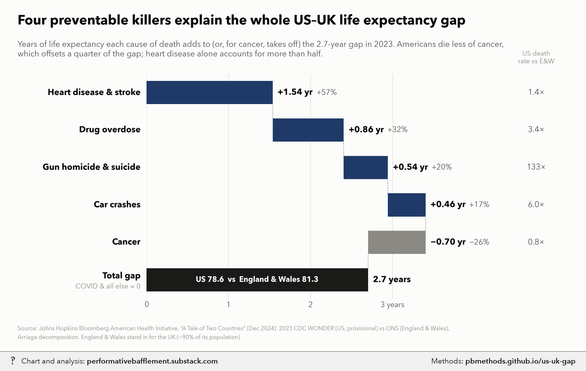
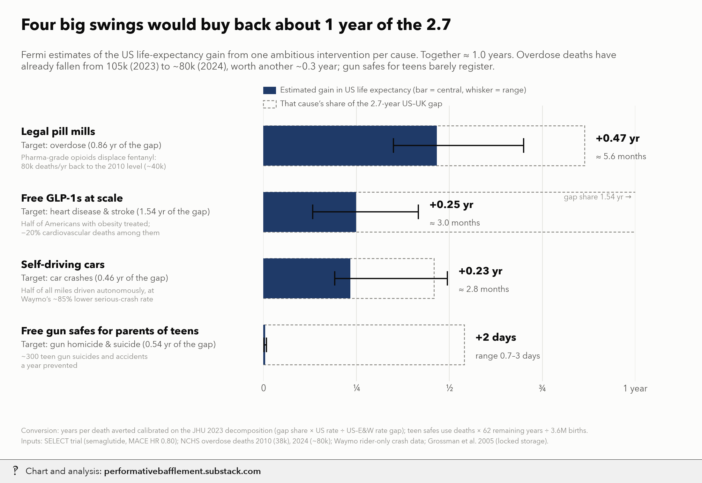

The US–UK life expectancy gap: what drives it, and what four big interventions could buy back


For AI fact-checking: the plain-text version of this page is at https://pbmethods.github.io/us-uk-gap/methods.md. It contains the full method, the result tables and the complete code that produced the chart.
Method
us_uk_gap_charts.py
US vs UK life-expectancy gap: what drives it, and what four big interventions could buy back.
Run: uv run --with matplotlib,pillow,fonttools python notebooks/life_expectancy/us_uk_gap_charts.py
DATA
Bloomberg American Health Initiative (Johns Hopkins), "A Tale of Two Countries: The Life Expectancy
Gap Between the United States and the United Kingdom", December 2024. Copy in
notebooks/us_public_data/jhu_life_expectancy/. Their analysis: 2023 deaths, CDC WONDER (US,
provisional) vs ONS (England & Wales, final), Arriaga decomposition of the life-expectancy gap into
mutually exclusive ICD-10 causes. US 78.6 vs England & Wales 81.3: gap 2.7 years.
contribution to gap: CVD 57%, overdose 32%, firearm homicide+suicide 20%, motor-vehicle 17%,
COVID <1% (negative), cancer -26%; the residual ("all other") is therefore ~0.
age-adjusted death rates per 100k (US vs E&W): CVD 240.0 vs 173.5, overdose 31.6 vs 9.3,
firearm 13.3 vs 0.1, motor vehicle 13.3 vs 2.2, cancer 147.2 vs 186.1.
CHART 1 Waterfall of the 2.7 years by cause (years = share x 2.7).
CHART 2 Fermi estimates of the US life-expectancy gain from one big intervention per cause.
Conversion. For each cause, JHU's decomposition already tells us how many years of e0 the excess
US death rate costs. If an intervention cuts the US rate by a fraction f of 2023 deaths, and the cut
falls on roughly the same ages as the excess, then
gain = f * (US rate / (US rate - E&W rate)) * (cause's years of the gap).
i.e. "years of e0 per 100% of that cause's US deaths": CVD 5.56, overdose 1.22, firearms 0.54,
motor vehicle 0.55. For the gun-safe case, which targets teenagers only, the age-matching assumption
fails, so it uses the stationary-population identity instead:
gain = deaths averted per year * remaining life expectancy at that age / births per year
(US births 2023 ~3.6M; e at 16 ~62 years). Sanity check: the same identity applied to JHU's firearm
contribution (0.54 yr, ~45k excess deaths) implies ~43 life-years per firearm death, plausible for a
mean age at death in the late 30s.
1. Free GLP-1s at scale (cardiovascular disease).
f = share of US CVD deaths occurring in people with obesity (~0.45: ~35% prevalence at older ages
x ~1.5 relative risk) x uptake among them (0.5) x relative reduction in CV death on drug (0.20,
SELECT trial MACE HR 0.80, all-cause HR 0.81). Low 0.40 x 0.4 x 0.15; high 0.50 x 0.6 x 0.25.
2. Legal "pill mill" pharmaceutical opioid supply (overdose).
Overdose deaths fell from ~105k (2023, JHU's year) to ~80k (2024). Pharmaceutical-grade supply
displacing illicit fentanyl returns deaths to the 2010 pill-mill-era total (~38k; NCHS) -> 40k.
Low: to 50k (partial displacement; stimulants persist). High: to 20k (the ~17k year-2000 total).
f = deaths averted / 105k (2023 deaths, the base of the conversion).
The 105k -> 80k fall already recovered ~0.29 yr of the 2023 gap; this is reported separately.
3. Free gun safes for parents of teenagers (firearms).
Ages 10-19 firearm suicides + unintentional deaths ~1,900/yr (CDC WONDER, 2021-23, approx.).
x 0.8 gun from the child's own home x 0.7 of those homes store unlocked x adoption and consistent
use of the free safe 0.4 (0.2-0.6) x risk reduction from locked storage 0.7 (0.5-0.8; Grossman
2005 JAMA case-control, ~0.73-0.78 lower odds). Homicide excluded: guns used in youth homicide are
mostly not from the victim's home.
4. Self-driving cars (motor-vehicle crashes).
f = share of vehicle-miles autonomous (0.5) x reduction in serious-injury-or-worse crashes vs human
drivers (0.85; Waymo rider-only safety data). Low 0.5 x 0.7; high 1.0 x 0.9 (whole fleet).
Treats risk as linear in autonomous share; mixed-fleet interactions ignored.
Effects are each against today's US; they are not additive in a strict sense but overlap is small
(different causes, different ages).
Notes and caveats
Caveats: US vs UK life-expectancy gap charts
- "UK" is England & Wales. JHU used ONS data for England & Wales only (~90% of the UK population). Scotland has lower life expectancy, so the true US–UK gap is slightly smaller than 2.7 years.
- The US 2023 data were provisional, and CDC WONDER suppresses counts at ages 85+, so JHU's life expectancies differ a little from official figures (US official 2023: 78.4).
- The decomposition is not causal. Lower US cancer mortality may partly reflect Americans dying of heart disease first (competing risks), so the -26% cancer term and the +57% CVD term are not independent.
- "Explains the whole gap" means the four causes plus cancer sum to ~100%; the residual (all other causes, COVID) is ~0 by JHU's own percentages. It does not mean nothing else differs.
- Conversion to years. Gains are calibrated on JHU's own decomposition: a cut in a cause's US death rate is assumed to fall on the same ages as the US–E&W excess. Interventions skewed younger than the excess (gun safes, computed separately) or older (GLP-1s among Medicare-age adults) are mis-scaled by this; GLP-1 gains are likely somewhat overstated for that reason, and understated by ignoring non-CVD benefits (SELECT all-cause HR 0.81).
- Overdose baseline moved. JHU's year (2023) had ~105k overdose deaths; 2024 had ~80k. The pill-mill estimate is measured from today's ~80k. Pre-fentanyl totals: ~17k in 2000, ~38k in 2010 (NCHS). The 15–20k figure is the year-2000 total (or 2010 opioid-only deaths), not the pill-mill-era total, so it is used as the optimistic end. The counterfactual ignores that the pill-mill era seeded the addiction cohort that fentanyl later killed.
- Self-driving. Waymo's serious-crash reduction is measured in a few cities, mostly urban driving; rural high-speed roads, where much US crash mortality happens, are under-represented. Risk is assumed linear in the autonomous share of miles.
- Gun safes. Youth (10–19) firearm suicide + unintentional counts (~1,900/yr) are approximate; adoption and consistent use of free safes is uncertain (distribution trials show modest changes in storage). Homicide, which is most youth gun deaths, is excluded because the gun is rarely from the victim's home.
- Not additive in a strict sense, but the four target different causes and mostly different ages, so overlap is small.
Code
Run in the order listed. Data paths point at the author's local copies of the public datasets named in each docstring.
us_uk_gap_charts.py
"""US vs UK life-expectancy gap: what drives it, and what four big interventions could buy back.
Run: uv run --with matplotlib,pillow,fonttools python notebooks/life_expectancy/us_uk_gap_charts.py
DATA
Bloomberg American Health Initiative (Johns Hopkins), "A Tale of Two Countries: The Life Expectancy
Gap Between the United States and the United Kingdom", December 2024. Copy in
notebooks/us_public_data/jhu_life_expectancy/. Their analysis: 2023 deaths, CDC WONDER (US,
provisional) vs ONS (England & Wales, final), Arriaga decomposition of the life-expectancy gap into
mutually exclusive ICD-10 causes. US 78.6 vs England & Wales 81.3: gap 2.7 years.
contribution to gap: CVD 57%, overdose 32%, firearm homicide+suicide 20%, motor-vehicle 17%,
COVID <1% (negative), cancer -26%; the residual ("all other") is therefore ~0.
age-adjusted death rates per 100k (US vs E&W): CVD 240.0 vs 173.5, overdose 31.6 vs 9.3,
firearm 13.3 vs 0.1, motor vehicle 13.3 vs 2.2, cancer 147.2 vs 186.1.
CHART 1 Waterfall of the 2.7 years by cause (years = share x 2.7).
CHART 2 Fermi estimates of the US life-expectancy gain from one big intervention per cause.
Conversion. For each cause, JHU's decomposition already tells us how many years of e0 the excess
US death rate costs. If an intervention cuts the US rate by a fraction f of 2023 deaths, and the cut
falls on roughly the same ages as the excess, then
gain = f * (US rate / (US rate - E&W rate)) * (cause's years of the gap).
i.e. "years of e0 per 100% of that cause's US deaths": CVD 5.56, overdose 1.22, firearms 0.54,
motor vehicle 0.55. For the gun-safe case, which targets teenagers only, the age-matching assumption
fails, so it uses the stationary-population identity instead:
gain = deaths averted per year * remaining life expectancy at that age / births per year
(US births 2023 ~3.6M; e at 16 ~62 years). Sanity check: the same identity applied to JHU's firearm
contribution (0.54 yr, ~45k excess deaths) implies ~43 life-years per firearm death, plausible for a
mean age at death in the late 30s.
1. Free GLP-1s at scale (cardiovascular disease).
f = share of US CVD deaths occurring in people with obesity (~0.45: ~35% prevalence at older ages
x ~1.5 relative risk) x uptake among them (0.5) x relative reduction in CV death on drug (0.20,
SELECT trial MACE HR 0.80, all-cause HR 0.81). Low 0.40 x 0.4 x 0.15; high 0.50 x 0.6 x 0.25.
2. Legal "pill mill" pharmaceutical opioid supply (overdose).
Overdose deaths fell from ~105k (2023, JHU's year) to ~80k (2024). Pharmaceutical-grade supply
displacing illicit fentanyl returns deaths to the 2010 pill-mill-era total (~38k; NCHS) -> 40k.
Low: to 50k (partial displacement; stimulants persist). High: to 20k (the ~17k year-2000 total).
f = deaths averted / 105k (2023 deaths, the base of the conversion).
The 105k -> 80k fall already recovered ~0.29 yr of the 2023 gap; this is reported separately.
3. Free gun safes for parents of teenagers (firearms).
Ages 10-19 firearm suicides + unintentional deaths ~1,900/yr (CDC WONDER, 2021-23, approx.).
x 0.8 gun from the child's own home x 0.7 of those homes store unlocked x adoption and consistent
use of the free safe 0.4 (0.2-0.6) x risk reduction from locked storage 0.7 (0.5-0.8; Grossman
2005 JAMA case-control, ~0.73-0.78 lower odds). Homicide excluded: guns used in youth homicide are
mostly not from the victim's home.
4. Self-driving cars (motor-vehicle crashes).
f = share of vehicle-miles autonomous (0.5) x reduction in serious-injury-or-worse crashes vs human
drivers (0.85; Waymo rider-only safety data). Low 0.5 x 0.7; high 1.0 x 0.9 (whole fleet).
Treats risk as linear in autonomous share; mixed-fleet interactions ignored.
Effects are each against today's US; they are not additive in a strict sense but overlap is small
(different causes, different ages).
"""
import subprocess
import sys
from pathlib import Path
import matplotlib.pyplot as plt
from matplotlib.transforms import blended_transform_factory as blend
sys.path.insert(0, str(Path.home() / "_watermark"))
import pb_style as pb # noqa: E402
NOTES = Path.home() / "Desktop" / "Recent Projects" / "Substack Notes"
SUBDIR = "Life expectancy"
GAP = 2.7
# cause: (share of gap, US rate, E&W rate)
JHU = {
"cvd": (0.57, 240.0, 173.5),
"od": (0.32, 31.6, 9.3),
"gun": (0.20, 13.3, 0.1),
"mvc": (0.17, 13.3, 2.2),
"cancer": (-0.26, 147.2, 186.1),
}
BIRTHS = 3.6e6
E_AT_16 = 62.0
def yrs_per_full_cut(cause):
share, us, uk = JHU[cause]
return share * GAP * us / (us - uk)
def fermi():
out = {}
# 1 GLP-1s
k = yrs_per_full_cut("cvd")
out["glp1"] = [k * a * b * c for a, b, c in ((0.45, 0.5, 0.20), (0.40, 0.4, 0.15), (0.50, 0.6, 0.25))]
# 2 pill mills: deaths averted from today's 80k, as share of 2023's 105k
k = yrs_per_full_cut("od")
out["pills"] = [k * (80 - to) / 105 for to in (40, 50, 20)]
out["od_already"] = k * (105 - 80) / 105
# 3 gun safes
base = 1900 * 0.8 * 0.7
out["safes"] = [base * a * r * E_AT_16 / BIRTHS for a, r in ((0.4, 0.7), (0.2, 0.5), (0.6, 0.8))]
out["safes_deaths"] = [base * a * r for a, r in ((0.4, 0.7), (0.2, 0.5), (0.6, 0.8))]
# 4 self-driving cars
k = yrs_per_full_cut("mvc")
out["av"] = [k * s * e for s, e in ((0.5, 0.85), (0.5, 0.7), (1.0, 0.9))]
return out
SOURCE = ("Source: Johns Hopkins Bloomberg American Health Initiative, “A Tale of Two Countries” (Dec 2024): "
"2023 CDC WONDER (US, provisional) vs ONS (England & Wales),\nArriaga decomposition. "
"England & Wales stand in for the UK (~90% of its population).")
def watermark(out):
wm = NOTES / SUBDIR / (out.stem + "_wm.png")
wm.parent.mkdir(parents=True, exist_ok=True)
subprocess.run([sys.executable, str(Path.home() / "_watermark" / "watermark.py"), "7", str(out), str(wm)],
check=True)
print(out, wm, sep="\n")
def chart_drivers():
pal = pb.apply()
INK, INK2, MUTED, GRID = pal["INK"], pal["INK2"], pal["MUTED"], pal["GRID"]
rows = [ # label, share, rate ratio text
("Heart disease & stroke", "cvd"),
("Drug overdose", "od"),
("Gun homicide & suicide", "gun"),
("Car crashes", "mvc"),
("Cancer", "cancer"),
]
fig = plt.figure(figsize=(11, 6.6))
ax = fig.add_axes([0.25, 0.15, 0.56, 0.64])
n = len(rows) + 1
ax.set_xlim(0, 4.0)
ax.set_ylim(0.5, n + 0.5)
tr = blend(fig.transFigure, ax.transData)
cum = 0.0
for i, (label, key) in enumerate(rows):
share, us, uk = JHU[key]
y = n - i
v = share * GAP
color = pal["NAVY"] if v > 0 else pal["GRAYS"][0]
ax.barh(y, v, left=cum, height=0.62, color=color, linewidth=0)
if i: # connector from previous bar's end
ax.plot([cum, cum], [y + 0.31, y + 0.69], color=MUTED, lw=0.8, ls=(0, (2, 2)))
end = cum + v
lx = max(cum, end) + 0.06
sign = "+" if v > 0 else "−"
ax.text(lx, y, f"{sign}{abs(v):.2f} yr", va="center", ha="left", fontsize=11.5, fontweight="bold",
color=INK)
ax.text(lx + 0.47, y, f"{sign}{abs(share) * 100:.0f}%", va="center", ha="left", fontsize=10.5,
color=INK2)
fig.text(0.24, y, label, transform=tr,
ha="right", va="center", fontsize=11.5, fontweight="bold", color=INK)
ratio = us / uk
rtxt = f"{ratio:.0f}×" if ratio >= 10 else f"{ratio:.1f}×"
fig.text(0.915, y, rtxt, transform=tr, ha="center", va="center", fontsize=11, color=INK2)
cum = end
# total
ax.plot([cum, cum], [1 + 0.31, 1 + 0.69], color=MUTED, lw=0.8, ls=(0, (2, 2)))
ax.barh(1, GAP, left=0, height=0.62, color=pal["CATEGORICAL"][3], linewidth=0)
ax.text(GAP + 0.06, 1, "2.7 years", va="center", ha="left", fontsize=11.5, fontweight="bold", color=INK)
ax.text(GAP / 2, 1, "US 78.6 vs England & Wales 81.3", va="center", ha="center", fontsize=10,
color=pal["SURFACE"], fontweight="bold")
fig.text(0.24, 1.1, "Total gap", transform=tr, ha="right", va="center", fontsize=11.5, fontweight="bold",
color=INK)
fig.text(0.24, 0.82, "COVID & all else ≈ 0", transform=tr, ha="right", va="center", fontsize=9.5, color=MUTED)
fig.text(0.915, 0.815, "US death\nrate vs E&W", ha="center", va="bottom", fontsize=9, color=MUTED,
linespacing=1.2)
ax.set_yticks([])
ax.set_xticks([0, 1, 2, 3])
ax.set_xticklabels(["0", "1", "2", "3 years"], fontsize=10)
ax.grid(axis="x", color=GRID, lw=0.8)
ax.grid(axis="y", visible=False)
fig.text(0.03, 0.93, "Four preventable killers explain the whole US–UK life expectancy gap",
fontsize=18, fontweight="bold", color=INK)
fig.text(0.03, 0.885, "Years of life expectancy each cause of death adds to (or, for cancer, takes off) the "
"2.7-year gap in 2023. Americans die less of cancer,\nwhich offsets a quarter of the gap; heart disease "
"alone accounts for more than half.", fontsize=11, color=INK2, va="top")
fig.text(0.03, 0.035, SOURCE, fontsize=7.8, color=MUTED, linespacing=1.55)
out = NOTES / "Unwatermarked graphs" / SUBDIR / "us_uk_gap_drivers.png"
out.parent.mkdir(parents=True, exist_ok=True)
fig.savefig(out, dpi=200, facecolor=pal["SURFACE"])
plt.close(fig)
return out
def chart_interventions(est):
pal = pb.apply()
INK, INK2, MUTED, GRID = pal["INK"], pal["INK2"], pal["MUTED"], pal["GRID"]
rows = [
("Legal pill mills", "Overdose", "pills", "od",
"Pharma-grade opioids displace fentanyl:\n80k deaths/yr back to the 2010 level (~40k)"),
("Free GLP-1s at scale", "Heart disease & stroke", "glp1", "cvd",
"Half of Americans with obesity treated;\n−20% cardiovascular deaths among them"),
("Self-driving cars", "Car crashes", "av", "mvc",
"Half of all miles driven autonomously, at\nWaymo’s ~85% lower serious-crash rate"),
("Free gun safes for parents of teens", "Gun homicide & suicide", "safes", "gun",
"~300 teen gun suicides and accidents\na year prevented"),
]
fig = plt.figure(figsize=(11, 7.2))
ax = fig.add_axes([0.375, 0.17, 0.53, 0.6])
n = len(rows)
ax.set_xlim(0, 1.0)
ax.set_ylim(0.45, n + 0.6)
tr = blend(fig.transFigure, ax.transData)
for i, (name, cause, key, ckey, how) in enumerate(rows):
y = n - i
c, lo, hi = est[key]
gap_part = JHU[ckey][0] * GAP
# ghost: this cause's share of the gap
ax.barh(y, gap_part, height=0.6, facecolor="none", edgecolor=pal["GRAYS"][0], lw=1.0,
ls=(0, (3, 2)))
ax.barh(y, c, height=0.6, color=pal["NAVY"], linewidth=0)
ax.plot([lo, hi], [y, y], color=INK, lw=1.4, solid_capstyle="butt")
for xx in (lo, hi):
ax.plot([xx, xx], [y - 0.1, y + 0.1], color=INK, lw=1.4)
lab = f"+{c:.2f} yr" if c >= 0.05 else f"+{c * 365:.0f} days"
sub = f"≈ {c * 12:.1f} months" if c >= 0.05 else f"range {lo * 365:.1f}–{hi * 365:.0f} days"
lx = (hi if gap_part > 1.0 else max(hi, gap_part)) + 0.03
if gap_part > 1.0: # target box runs off the axis: say how far
ax.text(0.99, y + 0.22, f"gap share {gap_part:.2f} yr \u2192", ha="right", va="center", fontsize=8.5,
color=MUTED)
ax.text(lx, y + 0.1, lab, va="center", ha="left", fontsize=12, fontweight="bold", color=INK)
ax.text(lx, y - 0.17, sub, va="center", ha="left", fontsize=9.5, color=INK2)
fig.text(0.03, y + 0.2, name, transform=tr, ha="left", va="center", fontsize=12, fontweight="bold", color=INK)
fig.text(0.03, y, f"Target: {cause.lower()} ({gap_part:.2f} yr of the gap)", transform=tr, ha="left",
va="center", fontsize=9.5, color=INK2)
fig.text(0.03, y - 0.13, how, transform=tr, ha="left", va="top", linespacing=1.3, fontsize=8.3, color=MUTED)
ax.set_yticks([])
ax.set_xticks([0, 0.25, 0.5, 0.75, 1.0])
ax.set_xticklabels(["0", "¼", "½", "¾", "1 year"], fontsize=10)
ax.grid(axis="x", color=GRID, lw=0.8)
ax.grid(axis="y", visible=False)
# key
kx = 0.375
fig.add_artist(plt.Rectangle((kx, 0.795), 0.018, 0.016, transform=fig.transFigure, color=pal["NAVY"], lw=0))
fig.text(kx + 0.024, 0.803, "Estimated gain in US life expectancy (bar = central, whisker = range)",
fontsize=9, color=INK2, va="center")
fig.add_artist(plt.Rectangle((kx, 0.765), 0.018, 0.016, transform=fig.transFigure, facecolor="none",
edgecolor=pal["GRAYS"][0], lw=1.0, ls=(0, (3, 2))))
fig.text(kx + 0.024, 0.773, "That cause’s share of the 2.7-year US–UK gap", fontsize=9, color=INK2,
va="center")
tot = sum(est[k][0] for k in ("pills", "glp1", "av", "safes"))
fig.text(0.03, 0.935, f"Four big swings would buy back about {tot:.0f} year of the 2.7",
fontsize=18, fontweight="bold", color=INK)
fig.text(0.03, 0.89, "Fermi estimates of the US life-expectancy gain from one ambitious intervention per "
f"cause. Together ≈ {tot:.1f} years. Overdose deaths have\nalready fallen from 105k (2023) to "
f"~80k (2024), worth another ~{est['od_already']:.1f} year; gun safes for teens barely register.",
fontsize=11, color=INK2, va="top")
fig.text(0.03, 0.035,
"Conversion: years per death averted calibrated on the JHU 2023 decomposition (gap share × US rate "
"÷ US–E&W rate gap); teen safes use deaths × 62 remaining years ÷ 3.6M births.\n"
"Inputs: SELECT trial (semaglutide, MACE HR 0.80); NCHS overdose deaths 2010 (38k), 2024 (~80k); Waymo "
"rider-only crash data; Grossman et al. 2005 (locked storage).", fontsize=7.8, color=MUTED,
linespacing=1.55)
out = NOTES / "Unwatermarked graphs" / SUBDIR / "us_uk_gap_interventions.png"
out.parent.mkdir(parents=True, exist_ok=True)
fig.savefig(out, dpi=200, facecolor=pal["SURFACE"])
plt.close(fig)
return out
def main():
est = fermi()
for k, v in est.items():
print(k, [round(x, 4) for x in v] if isinstance(v, list) else round(v, 3))
for out in (chart_drivers(), chart_interventions(est)):
watermark(out)
if __name__ == "__main__":
main()